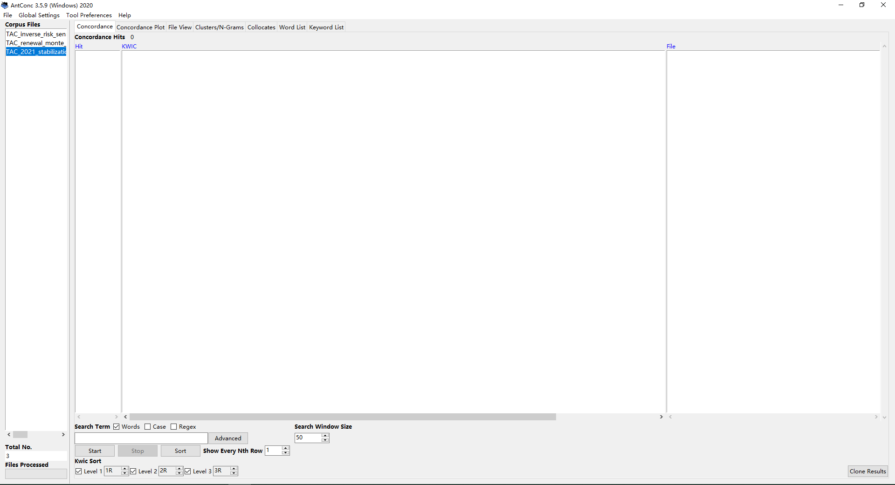
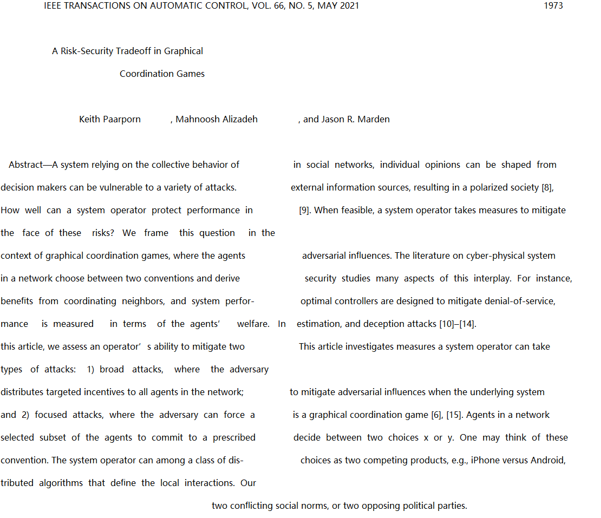
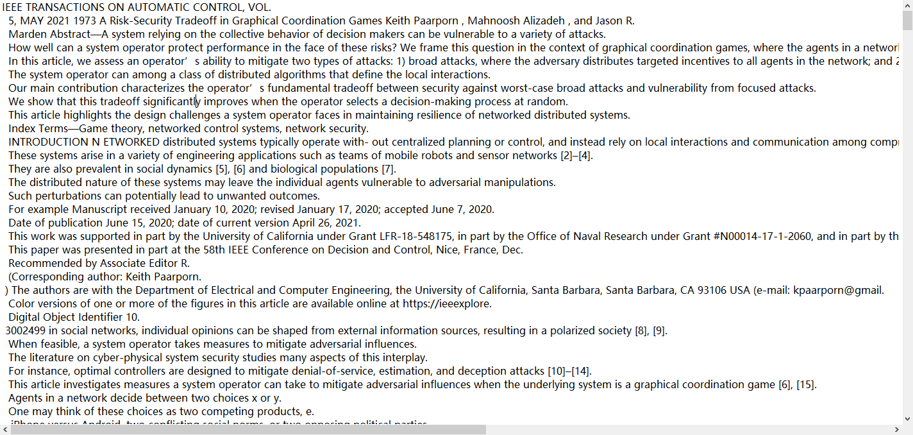

去年上《学术英语》课程的时候学过了科研语料库的使用，但当时没咋写论文，所以实际操作体验效果不明显，但是最近在润色之前写的一篇论文，又想到了这个语料库的使用，于是用了一下，发现效果还不错，本博客记录一下语料库的使用。同时，给出制作语料库的Python脚本。
语料库软件简介
上课时老师推荐的是AntConc，那就用这个软件吧。
具体相关资料可以直接用搜索引擎搜索。
软件的界面如下：

主要的操作流程一般就是导入\(n\)个txt文件制作的语料库，设置Search Term，然后点击start就可以出结果了，当然还有很多高级使用方式，不介绍了。
语料库制作脚本
所谓语料库，顾名思义就是，语言资料库，就是语言表达的集合。
如果直接从论文PDF中复制全文，由于换行符号的存在，复制出来的效果会是这样的：
我用的福昕PDF阅读器，如果用福昕PDF阅读器另存为txt文件，效果会是这样的：

这两种方式显然都不优雅，需要后期大量的工作来进行处理，我们的目的是想要一句完整的英文句子占用一行。
因此，写个脚本来自动化解决这个问题，当然原始的txt是采用第一种方法生成的，也就是按下Ctrl + A进行全选操作，然后复制到一个txt文件中，然后脚本对这个文件进行自动化处理生成目标文件。
算法实现分析
对生成的原始txt文件进行分析可以发现一下特征：
原始txt文件中有句号，分号，问号可以作为分割符号，但是为了不同的文章表达的意思不一样，所以直接统一使用句号来作为分隔符，经过测试发现，使用句号作为分隔符会有一些bug，例如66, NO.，5, MAY 2021 1973这样的就表达方式就错误地被解析了。
但是总体上不影响使用。
1 | # -*- encoding: utf-8 -*- |
当然还有很多可以改进的地方，例如：
使用正则表达式匹配，匹配出摘要，参考文献之类等。
匹配出题目、作者、发表时间以自动修改生成文件的文件名。
匹配后可以将一些没用的语句去掉。
但是现在的代码基本上不影响正常使用。
生成后的文件：

明显看起来就很整齐了，相比于未格式化的语料库，格式化后的语料库可以更好的被AntConc处理。